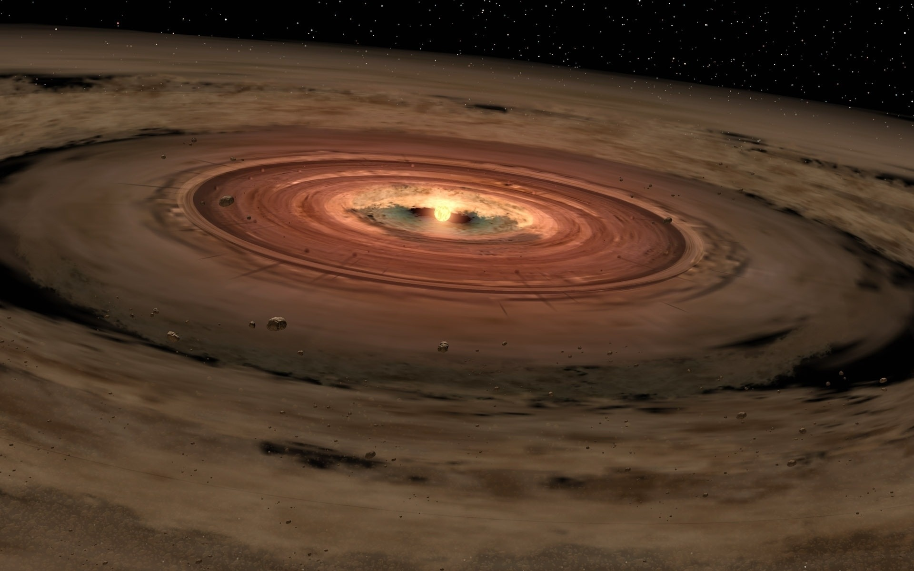

My name is Álvaro Ribas, and I am a Spanish astronomer working as a postdoctoral associate at Boston University. My research focuses on understanding protoplanetary disks: disks of dust and gas that can be found around newborn stars, and where planets form. By looking at the emission from these disks at different wavelengths and ages, I try to characterize their evolution and study how it impacts different aspects of planet formation.

Contact information
Álvaro Ribas Gómez
Email: aribas@bu.edu
Department of Astronomy, Boston University
725 Commonwealth Avenue, Office CAS 404B
Boston, MA 02215, USA